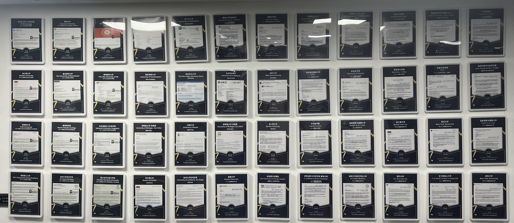

录取成果 · ADMISSION OUTCOMES
每一份录取，
都是一条路径
被看见。
鼎途支持的学生有不同起点、不同国家与不同学术方向。这里展示的不是一套通往“名校”的固定公式，而是长期准备、清晰选择与真实表达形成的部分结果。
浏览院校名单 ↓2015—2026持续积累的咨询实践
本科 · 研究生 · 转学覆盖不同阶段与任务
美国 · 英国 · 加拿大 · 亚洲多国家、多专业、多路径

成果如何发生 · HOW OUTCOMES TAKE SHAPE
录取不是教育的终点，
也不是孤立的偶然。
学生对自己的理解、课程与活动中的持续投入、学术和表达能力，以及对大学环境的判断，共同构成申请结果。好的咨询让这些部分彼此一致：申请支持成长，成长支撑申请，也为进入大学后的学习与生活留下能力。
部分录取院校 · SELECTED ACCEPTANCES
不同目标，
都有值得走通的路径。
点击分类查看中英文院校名单。以下为历年部分录取，不代表全部成果；同一院校可能包含多份录取。
01 / UNDERGRADUATE
美国本科
综合大学与文理学院
- 芝加哥大学University of Chicago
- 韦尔斯利学院Wellesley College
- 圣路易斯华盛顿大学Washington University in St. Louis
- 哈弗福德学院Haverford College
- 科尔盖特大学Colgate University
- 卫斯理安大学Wesleyan University
- 加州大学洛杉矶分校UCLA
- 南加州大学University of Southern California
- 纽约大学New York University
- 塔夫茨大学Tufts University
- 北卡罗来纳大学教堂山分校UNC Chapel Hill
- 曼荷莲学院Mount Holyoke College
- 布林莫尔学院Bryn Mawr College
- 波士顿大学Boston University
- 加州大学圣塔芭芭拉分校UC Santa Barbara
- 威斯康星大学麦迪逊分校University of Wisconsin–Madison
- 伊利诺伊大学香槟分校UIUC
- 东北大学Northeastern University
02 / GLOBAL PATHS
多国家本科
英国、加拿大、香港、澳大利亚等
- 剑桥大学University of Cambridge
- 帝国理工学院Imperial College London
- 伦敦政治经济学院London School of Economics
- 伦敦大学学院University College London
- 杜伦大学Durham University
- 多伦多大学University of Toronto
- 麦吉尔大学McGill University
- 英属哥伦比亚大学University of British Columbia
- 香港大学The University of Hong Kong
- 香港科技大学HKUST
- 香港理工大学The Hong Kong Polytechnic University
- 悉尼大学University of Sydney
- 墨尔本大学University of Melbourne
- 澳门大学University of Macau
03 / ARTS & SPECIALIST
艺术与专业院校
艺术、设计与特色工程教育
- 罗德岛设计学院Rhode Island School of Design
- 帕森斯设计学院Parsons School of Design
- 芝加哥艺术学院School of the Art Institute of Chicago
- 普瑞特艺术学院Pratt Institute
- 纽约视觉艺术学院School of Visual Arts
- 马里兰艺术学院Maryland Institute College of Art
- 罗斯–霍曼理工学院Rose-Hulman Institute of Technology
- 爱默生学院Emerson College
04 / ADVANCED STUDY
研究生与转学
跨专业、研究型项目与大学阶段再选择
- 剑桥大学University of Cambridge
- 布朗大学Brown University
- 卡内基梅隆大学Carnegie Mellon University
- 约翰斯·霍普金斯大学Johns Hopkins University
- 新加坡国立大学National University of Singapore
- 南洋理工大学Nanyang Technological University
- 曼彻斯特大学University of Manchester
- 香港城市大学City University of Hong Kong
- 香港大学The University of Hong Kong
- 伊利诺伊大学香槟分校UIUC
- 普渡大学Purdue University
- 佐治亚理工学院Georgia Institute of Technology
- 南加州大学University of Southern California
- 波士顿大学Boston University
说明：以上为鼎途历年部分录取结果。录取具有个体性和周期性，过往个案不构成对未来结果的承诺；院校名称、项目设置与招生政策可能调整，请以院校官方信息为准。
回到学生本人 · THE STUDENT COMES FIRST
想讨论的，不只是
“能申请哪里”。
一次免费初谈可以先梳理学生当前阶段、家庭关注的问题，以及接下来真正需要做的准备。
预约免费初谈 ↗